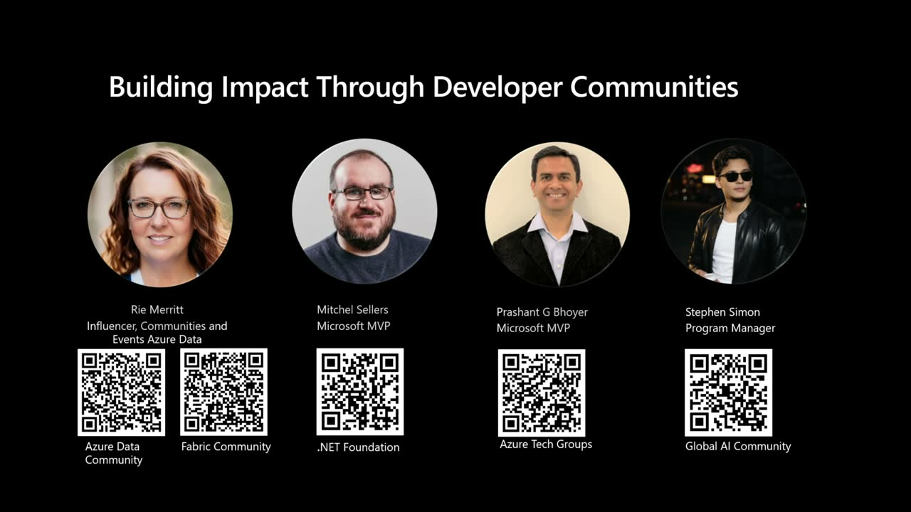

Building Impact Through Developer Communities
Official description
Join community leaders from.NET, Azure, Fabric and Global AI, to explore what it takes to build and grow tech communities. Hear their journeys, lessons learned, and how they stepped into leadership. Learn how to get involved, start a community, and connect with others who share your passion for technology.
Summary
Overview
A panel of community leaders from the .NET, Azure, Fabric, and Global AI ecosystems discuss how technical communities are built, sustained, and led. The conversation centers on personal journeys into leadership, practical advice for getting involved or starting a user group, and hard-won operational lessons about events, attendance, and budgeting.
Topics covered
- Pathways into community leadership, from attendee to organizer to running conferences
- Distinguishing levels of "involvement," from simply attending to taking on small recurring tasks (pizza orders, email, social media)
- Finding a personal "sweet spot" of skills to contribute, including non-technical skills like marketing and social media
- Requirements for becoming a recognized Microsoft user group: covering the Microsoft stack in at least half of meetings, holding a minimum number of meetings, and having at least two leaders for continuity
- Why aspiring organizers should learn from an existing group before starting their own
- Mentoring and giving first-time speakers a chance, and the speaker-evaluation challenge
- Post-COVID event economics: virtual vs. in-person attendance and travel budgets
- Using nominal ticket fees ($5–$15) to raise no-show attendance rates from ~40–50% to ~80–85%
- Designing conferences around community experience, including a non-commercial community lounge at FabCon
- Building a professional network as a career asset
Notable quotes
"You all can go to any conference, any training that you want to anywhere and learn something, but you'll come back to a conference because of the way it made you feel." — Rie Merritt
"If you haven't already run a user group, if you think it's easy, you're going to fail... my advice would be to find another group that you can kind of work with them a little bit. Learn the ropes." — Rie Merritt
"The idea that some little teeny tiny thing that I did, introducing myself to someone... that it changed the trajectory of her career is such like a drug." — Rie Merritt
Products and tools mentioned
- .NET / .NET Foundation
- Microsoft Azure
- Microsoft Fabric
- Global AI Community
- Microsoft Cognitive Services
- FabCon
- SQLCon [inferred]
- SQL Saturday (Atlanta) [inferred]
- Azure Data community
- Microsoft MVP program
Speakers featured
- Mitchel Sellers — leader in the .NET community and .NET Foundation; active since 2008–2009; MVP of 17 years
- Prashant G Bhoyar — community leader in the Washington, DC area, active since 2012; runs monthly user groups and 3–4 community conferences a year on Microsoft technologies
- Rie Merritt — Principal PM Manager at Microsoft, leading Influencers, Community and Events for Azure Data; oversees MVP programs, user group networks, FabCon and SQLCon; runs the Atlanta Azure Data user group
- Stephen Simon — listed panelist [inferred]
- Moderator (Azure Community Lead) — identified in the transcript as "Gallima Basa" [inferred], focused on empowering communities worldwide
Frames
{kind=link}
{kind=link}
{kind=link}
{kind=link}
{kind=link}
{kind=link}
{kind=link}
{kind=link}
{kind=link}
{kind=link}
{kind=link}
{kind=link}
{kind=link}
{kind=link}

{kind=link}
Frames around each announcement
Transcript
Show / hide transcript (31,834 chars)
[00:00:04] Can you hear me now? [00:00:04] We're good. [00:00:05] OK. [00:00:07] Hi everyone and welcome. [00:00:08] My name is Gallima Basa. [00:00:10] I am the Azure Community Lead and my role is [00:00:12] really focused on community, empowering communities around the world. [00:00:17] Today we are joined by community leadersfrom.net, Azure, Fabric, Global [00:00:22] AI, and they're here to talk about what it means [00:00:25] to build community, how to get involved, and we'll hear [00:00:29] about their journeys and leadership lessons they've learned along the [00:00:34] way. [00:00:34] Practical ways in which you can get involved, start a [00:00:37] community, or even connect with others who share your passion [00:00:40] for technology. [00:00:42] Again, this is meant to be a interactive conversation, so [00:00:45] feel free to raise your hand if you have questions, [00:00:48] but we'll just jump into it. [00:00:51] We'll start off with introductions looking at my panelists. [00:00:55] Can you please tell me a little bit about who [00:00:57] you are, what community you represent, and how you first [00:01:00] got involved in leadership? [00:01:05] My name is Mitchell. [00:01:06] Can you guys hear me? [00:01:07] There we go. [00:01:07] My name is Mitchell Sellers. [00:01:08] I represent the.net community. [00:01:11] I've been active in variousbitsofthe.net community since 2008, 2009 got [00:01:17] into some leadership roles through a couple open source projects [00:01:22] and other things. [00:01:24] Kind of tripped, fell and landed there. [00:01:26] Not sure that I could do it again, but ever [00:01:28] since then I've been in leadership roles within open source [00:01:32] communities, conferences, events, and a few other things, as well [00:01:35] as the dot net foundation. [00:01:37] So lots of interesting community experiences. [00:01:42] My name is Prashanji Boyer, I am from the Washington, [00:01:46] DC area of United States and I've been active in [00:01:49] the community since 2012. [00:01:52] My first experience with the community was as an attendee [00:01:55] and then I started helping with the running the user [00:01:58] groups and slowly started getting into running local conferences as [00:02:02] well. [00:02:03] And we have one of the strong communities in the [00:02:05] DC area. [00:02:06] We meet every month in person and also we run [00:02:09] like 3 to 4 community conferences in a year on [00:02:11] various topics around Microsoft tech. [00:02:15] My name is Rhee Merritt. [00:02:17] I am a Principal PM Manager with Microsoft and my [00:02:20] job is Influencers Community and Events for Azure data. [00:02:25] And So what falls under my purview are the MVP [00:02:28] programs, two different user group networks, super users, our engagement [00:02:33] at various events across the community and then Fab Con [00:02:37] and Sequel Con. [00:02:39] In my not Microsoft working life, I run a user [00:02:43] group based in Atlanta, Atlanta Azure Data and prior to [00:02:47] the pandemic ran Sequel Saturday Atlanta and haven't gotten back [00:02:53] involved in that lately. [00:02:55] But so personal life community oriented and then I turned [00:02:59] it into a job. [00:03:00] Thank. [00:03:01] You so can you talk a little bit what motivated [00:03:04] you to step in a leadership role when it comes [00:03:07] to your communities? [00:03:09] Like what was the deciding factor for you to to [00:03:11] take this leadership role? [00:03:13] I'm a control freak. [00:03:16] I like to be in charge of things and when [00:03:19] other people don't do it right, I get frustrated No, [00:03:22] I just so even even with my job right so [00:03:25] in the role that I'm in at Microsoft, slowly things [00:03:28] got put onto my plate, but the same happened kind [00:03:31] of in the community right. [00:03:33] I started helping out just a little bit and found [00:03:36] that I could take that on my plate, right? [00:03:38] Still have a full time job, still be a mom [00:03:41] to my daughter, but and then could also give that [00:03:44] little bit back to the community, right? [00:03:47] Like I, so I built my career in the community, [00:03:49] right? [00:03:49] I went from junior DBA all the way up to [00:03:51] director of database administration for the largest payment processor in [00:03:55] the world because I attended user groups and I attended [00:03:58] regular meetings and all that. [00:04:00] So this was just this little way of how can [00:04:03] I give back? [00:04:04] And then just kind of like took on a little [00:04:07] bit more and a little bit more and next thing [00:04:11] I know I'm running the group. [00:04:13] So that's how. [00:04:16] Thank. [00:04:17] You OK? [00:04:17] So I have two reasons for it. [00:04:20] One is the first because some of the mentors who [00:04:23] mentored me in the early part of my career, they [00:04:26] were like, OK, now I need to step back. [00:04:29] I'm in a phase of life where I need to [00:04:30] spend more time with my family. [00:04:32] That was one reason. [00:04:34] And 2nd is I started getting into the leadership role [00:04:38] with the communities around 2017 area time. [00:04:42] And that's the time I saw, hey, this shiny new [00:04:44] thing called AIS. [00:04:45] There companies like Microsoft and others are investing a lot [00:04:48] of time, but there's not much, you know, happening around [00:04:51] that. [00:04:52] So how I can get involved and, you know, start [00:04:55] my own user group so that, you know, we like [00:04:57] like minded people come together and start discussing around different [00:05:01] topics. [00:05:01] Like some of the topics that were really hard that [00:05:04] time was Microsoft Cognitive Services, like how a developer community [00:05:08] can use the services and start build solution. [00:05:11] And one of the ways I found is if nobody [00:05:13] else is doing it, then why not I just step [00:05:15] up and you know, be in a leadership role and [00:05:18] start organizing user group meetings. [00:05:20] And then at the same time there was also a [00:05:22] push from Microsoft, you know, hey, we need more day [00:05:25] long events on this areas like can you help us [00:05:28] doing that? [00:05:28] And we started collaborating with global AI community and also [00:05:32] Microsoft Azure group. [00:05:34] We are now along with the monthly user group meeting, [00:05:36] we also started running the day long conferences as well. [00:05:40] Yeah, as I said, for and for me, it's a [00:05:43] very similar to the others. [00:05:45] You know, I got started in in my career and [00:05:47] the community events and some of those interactions really gave [00:05:51] me some opportunities. [00:05:52] So I was looking for ways to give back as [00:05:54] people stepped away and other ways just to be able [00:05:57] to kind of help keep things moving along. [00:06:00] The other thing is, is that as you step into [00:06:02] the leadership role, you get reminded of some of the [00:06:05] things that were new to you when you got started. [00:06:08] They help make you a, you know, a better manager, [00:06:10] a better mentor as well because you are the one [00:06:13] now helping lead those other new people into the community [00:06:16] and showing them, OK, well, here, here's how you can [00:06:18] get involved. [00:06:19] Here's how we might be able to help you help [00:06:21] whatever the organization or the event or that kind of [00:06:24] thing is. [00:06:25] So it's a way for me to also, you know, [00:06:27] help keep that momentum going and bring more to the [00:06:31] communities to help keep the process moving. [00:06:34] Thank. [00:06:35] You if someone wants to get involved in a tech [00:06:38] community, what's the best way to start? [00:06:42] So I think I would have to to ask you [00:06:44] what does involved mean, right? [00:06:46] So you can, you can be an attendee like you [00:06:49] never, you never have to do anything but attend a [00:06:51] user group meeting and you're in community, right? [00:06:55] You're attending build, you're here at the session, you're in [00:06:58] the community check, right? [00:06:59] So you're done. [00:07:00] You've already accomplished one thing on your list, right? [00:07:03] So I think it would depend on what involved means, [00:07:06] right? [00:07:06] You can be an active participant, ask questions, attend meetings, [00:07:09] right? [00:07:10] Like as a leader, seeing somebody consistently attend is quite [00:07:13] the rush, right? [00:07:14] Oh, I'm doing something right. [00:07:16] They appreciate it. [00:07:17] So that's all you would ever have to do. [00:07:19] But I would suggest not jumping into the deep end [00:07:23] of the pool if you want to get involved in [00:07:25] leading or guiding the community, right? [00:07:28] Start small. [00:07:29] I started helping with registration at an event that we [00:07:33] hosted like that was my my 0 entry pool into [00:07:36] into leading the community right? [00:07:39] I, the first time I spoke at a conference, I [00:07:42] moderated a women in tech panel, right short entry. [00:07:47] So I would say start small, pick something, go talk [00:07:51] to your local user group leader. [00:07:53] How can I help? [00:07:54] Can I be the person that's in charge of ordering [00:07:57] pizza each month? [00:07:58] Can I be the person who makes sure the emails [00:08:01] go out each month? [00:08:02] Right. [00:08:02] It's it sounds small but to that person who's running [00:08:05] the group, it would be such a load off if [00:08:08] even just three people in a group offered to do [00:08:10] something each month. [00:08:12] So that's my advice, find your local user group and [00:08:15] ask them hey how can I help? [00:08:18] All great points made by Reeve. [00:08:20] One thing I can add is find your sweet spot. [00:08:23] Like what do you like to do more or what [00:08:25] are some of the activities which you enjoy? [00:08:28] For some people, it may be helping the user group [00:08:30] with social media post. [00:08:31] Some people may be really good in terms of, you [00:08:33] know, sending out marketing e-mail. [00:08:35] Some people I know in our user group, they're really [00:08:38] good in terms of finding what should the food we [00:08:40] order, what kind of quantity, which restaurant we should order [00:08:43] from, because all these small, small things matters and it [00:08:46] takes some time. [00:08:47] So find your sweet spot and then see and then [00:08:50] start getting slowly into it. [00:08:52] And once you like it, then maybe you can take [00:08:54] on more and more responsibilities. [00:08:56] Or not. [00:08:57] Yeah, as I say and and everything that these two [00:08:59] have mentioned, I would completely agree. [00:09:01] I'll add two small things. [00:09:04] Go to the parties and the after events and anything [00:09:07] that you go to, if you want to get involved, [00:09:09] that's your place to start. [00:09:11] That's where you're going to meet the organizers, the speakers, [00:09:14] those of us that are there, right. [00:09:16] No matter how many conferences I go to a year, [00:09:19] which is like 15, maybe 20 a year, I always [00:09:21] go to the parties because you never know who you're [00:09:23] going to run into, who you're going to get a [00:09:26] chance to connect with. [00:09:27] And those introductions are sometimes your ways in, whether it [00:09:30] is in a volunteer basis, as a speaking basis, as [00:09:33] a professional basis, as a hey, you found the right [00:09:36] person to complain to about that product that you use. [00:09:39] All of the above can happen. [00:09:40] And that's one of those ways in. [00:09:42] The other thing is, is if you have a unique [00:09:44] ability, especially anything in the tech space, if you're a [00:09:47] marketing person, a social person, somebody that does some of [00:09:50] those things that maybe aren't as prevalent in the community, [00:09:53] and those are the types of skills that you want [00:09:55] to help volunteer. [00:09:56] Those are really the things, even if you just volunteer [00:09:58] and say, hey, I could do this or I could [00:10:00] help with this. [00:10:01] Maybe they won't need you now, but they might need [00:10:03] you later. [00:10:04] And then being there and having those conversations, you never [00:10:07] know when that networking will come back and be of [00:10:10] benefit to you or others long term. [00:10:13] So taking a step further, if someone wanted to start [00:10:16] a user group for your particular community, can you talk [00:10:19] through the steps and the requirements and what that looks [00:10:21] like? [00:10:24] So that's, that's just me, right? [00:10:25] You 2 don't run. [00:10:26] OK. [00:10:26] So I run two different user group networks and we [00:10:29] have, there's a whole process in place about what you [00:10:32] need to do to start a user group on your [00:10:35] own and to manage it and to qualify for the [00:10:37] kind of benefits that we offer. [00:10:39] We have the Azure data community, we have the Fabric [00:10:41] community. [00:10:42] Similarly, Gallima has and his group has the same criteria [00:10:46] that mine does, right? [00:10:47] So you have to apply if you it's, it's, if [00:10:50] you already run a user group, great, you're applying for [00:10:54] support. [00:10:54] Do you already meet the criteria? [00:10:56] So to be a Microsoft user group, you actually have [00:10:58] to talk about the Microsoft stack. [00:11:01] Not every meeting we both have part of our policy [00:11:04] is at least half of your meetings need to be [00:11:06] about the Microsoft stack right? [00:11:08] Now, that doesn't mean you can't talk about other stuff [00:11:10] the other half of the time. [00:11:12] But if you're going to call yourself a Microsoft user [00:11:14] group, you better at least dress up like one, right? [00:11:17] So you have to hold a certain number of meetings [00:11:19] a year. [00:11:20] You have to have at least two leaders. [00:11:22] You can't run one by yourself. [00:11:23] Because if you start building this group and you're running [00:11:26] it by yourself and you get hit by a bus, [00:11:28] what happens to the user group? [00:11:30] There's no leadership left to handle things. [00:11:32] There's not even anybody left who has the right permissions [00:11:35] to e-mail everybody in the group to say, hey, somebody [00:11:38] got hit by a bus, right? [00:11:40] So, but there's, there is that application process. [00:11:43] Now, if you don't already have a group and you [00:11:46] want to start one, I think my advice would be, [00:11:48] and this is the guidance that we give to our [00:11:51] user group leaders is that's a really bad idea. [00:11:54] If you haven't already run a user group, If you [00:11:57] think it's easy, you're, you're going to fail. [00:12:00] Like you just really, really are going to fail. [00:12:02] You're going to think it's easy and it's not going [00:12:04] to be easy. [00:12:05] You're not going to have a support network. [00:12:06] So my advice would be to find another group that [00:12:10] you can kind of work with them a little bit. [00:12:14] Learn the ropes, learn how to how to connect with [00:12:17] speakers, learn how to find sponsors, learn how to identify [00:12:21] a venue, all of these things that that you aren't [00:12:24] just born knowing, right? [00:12:26] You can learn from somebody else. [00:12:27] And then when you've gotten a little bit of it [00:12:30] down, if you wanted to start something on your own, [00:12:33] that's when I would recommend like, I don't think we, [00:12:36] if you apply with us, we absolutely don't just hand [00:12:38] out user groups if you have no idea what you're [00:12:41] doing. [00:12:41] I. [00:12:43] Agree. [00:12:47] Reflecting on your experience as community leaders, what has been [00:12:50] your favorite community moment or success story? [00:12:58] I can go first. [00:12:58] So one of my favorite success story is so I [00:13:02] am from Washington, DC area and we have a different [00:13:05] kind of diverse, you know, audience over there. [00:13:09] Some people work in the federal sector or government sector, [00:13:13] some people work in the, the commercial organizations. [00:13:17] And most of you know, like lot of things are [00:13:19] happening in the federal sector, especially since last two years. [00:13:22] A lot of people in the DC area, they're either [00:13:24] out of work or they are, they have to change [00:13:26] the career. [00:13:27] And one of the success stories we had recently is [00:13:30] so we, we run a lot of, you know, entry [00:13:33] level kind of sessions, entry level hands on workshop where [00:13:36] we work with Microsoft and give you the environment where, [00:13:40] OK, here you go. [00:13:41] Just bring your laptop and you're going to build a [00:13:43] thing in a day. [00:13:45] And couple of attendees, they really got introduced to some [00:13:48] of the new technologies from Microsoft. [00:13:50] And one attendee just came to us last month saying, [00:13:52] hey, because of all this training we had, we actually [00:13:55] did a career change and we found an entry level [00:13:58] job now where I was doing something else before, but [00:14:01] now I found an entry level job in IT because [00:14:03] the tools or the labs that we you gave us [00:14:05] really helped me to uncover new things. [00:14:07] And now I just launched onto that. [00:14:09] And then to put some extra time and because of [00:14:12] that I could make a career change. [00:14:16] Yeah, as I say, for me a lot of it [00:14:18] comes down to especially for user group and an event [00:14:21] based support, is it seeing those individuals progress in their [00:14:25] career, whether it be you know a job scenario as [00:14:28] as you mentioned. [00:14:30] But I see a lot of people that we help, [00:14:32] you know, when we evaluate speakers. [00:14:34] One of the hardest things with any event, right is, [00:14:37] is seeing yes or no to a speaker. [00:14:39] But I don't ever want to tell somebody no because [00:14:41] you don't have any experience because, well, how do you [00:14:43] get experience if nobody gives you a chance? [00:14:46] So I have a real strong tendency to work with [00:14:49] those that are new speakers. [00:14:51] And there's nothing better for me than to see that [00:14:53] person that, you know, gave their first talk at our [00:14:56] event. [00:14:57] Maybe it didn't go so great. [00:14:58] They got some feedback and they moved on. [00:15:01] And then now I see them at all of the [00:15:02] other events, the same events that I'm at, doing their [00:15:05] own thing or starting their own user group. [00:15:07] So for me, it's that continuing to feed the cycle [00:15:10] and feed the machine that's the real, you know, winning [00:15:13] moments for me is, is seeing others, seeing those people [00:15:17] even, you know, I've been MVP for 17 years, seeing [00:15:20] them get nominated into the MVP program. [00:15:23] They're at summit with me. [00:15:24] You know, that's, that's what we're all about is to [00:15:26] continue to make things better within our individual communities. [00:15:31] So I think, I think my example of like this, [00:15:33] this great moment in the community is actually a little [00:15:36] bit more personal than yours were. [00:15:38] So at my user group in Atlanta, this, this woman [00:15:42] who eventually became my friend said to me one day, [00:15:45] you're the reason I came back. [00:15:49] And I was like, explain like what? [00:15:51] What exactly do you mean by that? [00:15:53] And she said, I had come to the user Group [00:15:56] A couple of years ago and the session that they [00:15:59] presented was really, really complicated. [00:16:03] And she said, I thought I was in over my [00:16:05] head. [00:16:05] She said, so I didn't come back for like a [00:16:08] full year. [00:16:08] And she said, then the next year I decided I'm [00:16:10] going to come back again, give it another shot. [00:16:12] She had a year of experience on it with her, [00:16:14] right? [00:16:15] And so she comes in and sit down. [00:16:16] And by then I had moved to town. [00:16:18] I was involved in the user group and I see [00:16:20] her there. [00:16:21] I've never seen her before. [00:16:22] So I walked over and I introduced myself to her. [00:16:24] Who are you? [00:16:25] What do you do? [00:16:26] Are you from the Atlanta area? [00:16:28] Whatever. [00:16:29] We talked for a minute and then I like call [00:16:32] other people over and introduce them to her so that [00:16:36] she felt comfortable and welcomed at this user group. [00:16:41] And she said, and I just kind of knew right [00:16:43] then that I found my place and I found my [00:16:45] people. [00:16:46] And so she eventually actually became a speaker, became an [00:16:50] MVP. [00:16:51] She's not anymore. [00:16:51] I hired her eventually to work for me. [00:16:54] But it was and to me that moment, I didn't [00:16:57] even really remember it until she talked about it. [00:17:00] That was, I was just being kind to someone who [00:17:04] had just shown up and sat down by herself, but [00:17:07] to her, it changed the trajectory of something, right? [00:17:11] So the idea that some little teeny tiny thing that [00:17:15] I did, introducing myself to someone and introducing her to [00:17:20] other people, that it changed the trajectory of her career [00:17:24] is such like a drug, right? [00:17:27] That's, I mean, it was just so powerful for me [00:17:29] to know that this one little thing had this kind [00:17:32] of impact. [00:17:33] So that's the one for me. [00:17:35] Thank you for sharing. [00:17:37] Before we opened up to the crowd, my last question [00:17:41] is what was your last event? [00:17:43] What did it look like? [00:17:45] What learnings do you have to share? [00:17:46] Like if you had one one mistake that new community [00:17:50] leaders can avoid, what would that be? [00:17:56] I, I got this one. [00:17:57] Unfortunately, one of the events that I, I help organize [00:18:02] has been struggling ever since COVID. [00:18:06] You know, we were in person all of the time. [00:18:08] COVID happened, we pivoted, did our first virtual event. [00:18:11] It was an amazing success. [00:18:14] And then last year, after a lot of pressure from [00:18:17] our community, they're like, we want to be in person. [00:18:20] We want to be in person. [00:18:22] Yeah. [00:18:22] The money wasn't where the people were and it was [00:18:26] a big flop. [00:18:28] We had a great success and then we kind of [00:18:30] went down to people still wanted to be there, but [00:18:33] they didn't want to spend the money to travel. [00:18:35] They didn't want to go anywhere. [00:18:36] They didn't want to pay that much money for a [00:18:38] ticket. [00:18:38] We still got a lot of in person. [00:18:41] And so the real learning for me with that is [00:18:44] trust your gut and and know your community. [00:18:47] You know, I gave in to some of the pressures [00:18:50] from some long time community members that we had and [00:18:53] said OK, fine, we'll give it a try. [00:18:55] At the end of the day, you know, thankfully our [00:18:59] org had built up enough funds within our community to [00:19:02] where it wasn't, you know, a devastating blow. [00:19:06] But in many cases it would have been. [00:19:07] So understanding that audience is one of those things that [00:19:11] like if you have a feel for it, you have [00:19:13] a feel for it. [00:19:14] You mentioned government people. [00:19:15] We have a lot of those in the one of [00:19:17] the communities that I work within and they don't have [00:19:20] travel budgets and they don't do a lot of discretionary [00:19:23] spending. [00:19:24] So a $200 online event or $100 online event, that's [00:19:28] a no brainer. [00:19:29] But a travel to any location doesn't matter where it [00:19:33] is that ends up being on their own dime. [00:19:35] And for our community, that meant us going from 150 [00:19:39] attendees to only 80. [00:19:42] And that's just one of those lessons you learn over [00:19:45] time. [00:19:46] And so definitely it's just paying attention and and knowing [00:19:49] where you're going and what you're doing, even if you've [00:19:51] been doing it for a long time. [00:19:54] So on similar note, recently we used to organize a [00:19:58] lot of free events. [00:20:01] And with the free event, one thing we observed is [00:20:04] the attendance rate was almost 40 to 50%. [00:20:08] So every time we have a free event and let's [00:20:10] say the venue can accommodate 100 people, we used to [00:20:13] sell 200 tickets and we used to plan food for [00:20:16] let's say 100 people. [00:20:17] And recently what happened is because we had a lot [00:20:20] of no shows. [00:20:21] One of the new thing we are trying is just [00:20:25] add nominal fees as a ticket price, like for example [00:20:29] $10 and $15. [00:20:30] And because of that, what we are finding is the [00:20:33] attendance rate is almost 80 to 85%. [00:20:35] And we had a situation recently where we didn't anticipate [00:20:38] that. [00:20:38] So we planned the food for 60% people and certainly [00:20:41] 80% people showed up. [00:20:44] Luckily we had pizza places where we can order food [00:20:46] from. [00:20:47] But that was like a really good lesson learned for [00:20:49] us, saying like, hey, if you were going to charge [00:20:52] even $5, make sure your attendance rate is going to [00:20:55] be almost 80 to 85%. [00:20:58] OK. [00:20:58] So my example does not align. [00:21:02] One of my jobs is Fab Con, right? [00:21:04] So I help run Fab Con. [00:21:06] And so that was in Atlanta this past year at [00:21:08] the Georgia World Congress Center and we had 8000 attendees [00:21:10] in person. [00:21:11] It's now the second largest conference that Microsoft runs. [00:21:15] But we kind of have some of the same problems [00:21:18] along the way, right Speaker submission, like we get a [00:21:21] lot of them, but some of them are bad. [00:21:24] So I spend a lot of time training people on [00:21:26] how to ride a good abstract. [00:21:29] But we infuse, I think probably better than a lot [00:21:32] of conferences do Fab Con infuses community into the whole [00:21:36] thing. [00:21:37] Like the, the, the budget I have to devote to [00:21:40] the community experience at Fab Con and Sequel Con is, [00:21:44] is large because I say this anytime I get involved [00:21:47] in a conference. [00:21:49] You all can go to any conference, any training that [00:21:51] you want to anywhere and learn something, but you'll come [00:21:54] back to a conference because of the way it made [00:21:57] you feel. [00:21:58] Did you feel welcome? [00:21:59] Did you feel connected? [00:22:00] Did you feel like your speaker knew what they were [00:22:03] talking about and that that they were talking to you [00:22:06] and that those points landed and that the, you know, [00:22:10] the Expo hall where all the sponsors are, Did it [00:22:12] just feel like they were only screaming marketing at you [00:22:16] or was there some level of engagement? [00:22:18] Right. [00:22:19] So we have a huge community lounge. [00:22:21] I think the space that it took up in Atlanta [00:22:25] was 30 feet by 100 feet of not a single [00:22:28] sponsor, nothing commerce, just community theaters where they talked about [00:22:34] community meet and greets, certifications, MVP program, user groups, game [00:22:40] night, every night in the afternoon, cupcakes or cookies or [00:22:45] whatever, like bean bags, charging stations, all that stuff. [00:22:50] Only community, not commerce, just giving people the opportunity outside [00:22:56] of a of a session to connect and to recharge [00:22:59] and to meet somebody or to meet somebody with a [00:23:03] like, with like interest, right? [00:23:05] So if you all you've been here now a whole [00:23:07] day, it's almost the end of the first day. [00:23:09] How many of you have not met someone that you [00:23:13] have connected with on LinkedIn or some other way? [00:23:16] You've all done that, right, right. [00:23:19] So if you haven't been doing that, you're doing it [00:23:23] wrong, right? [00:23:24] You need to build your network. [00:23:25] That's what this is for. [00:23:27] Your network is your community. [00:23:28] When you go back to work, that's who's going to [00:23:29] answer your questions. [00:23:30] So make the community can make the community feed your [00:23:33] career while you're here. [00:23:35] Thank you. [00:23:36] Can we get a round of applause for our our [00:23:38] our panelists?